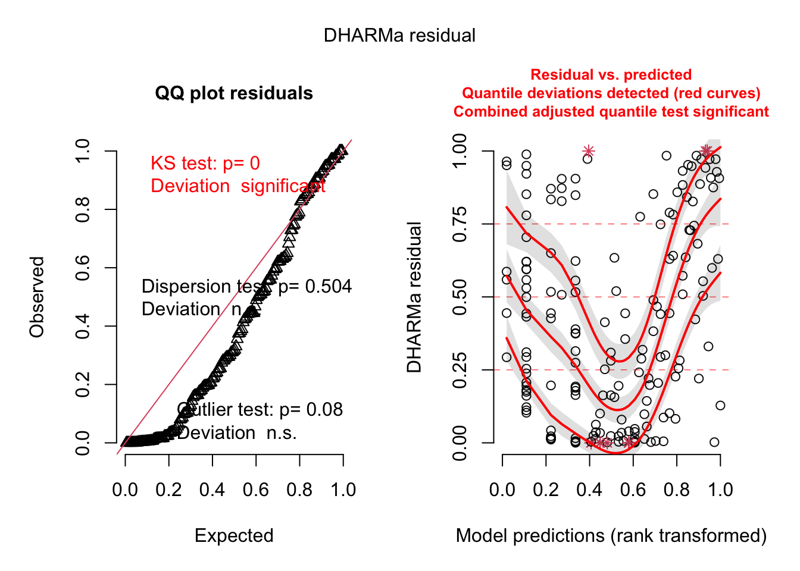
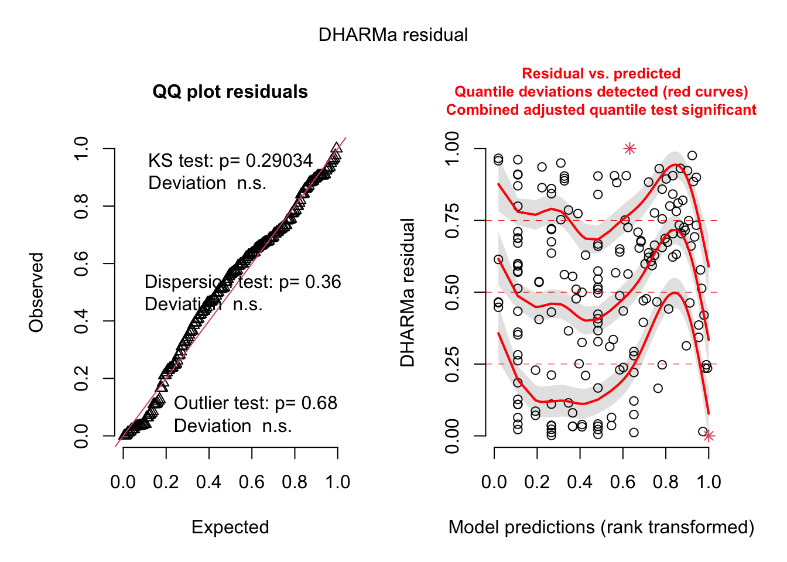

How does total seed number differ between kangaroo rat mound locations?
Introduction
In order to ensure plant species diversity within a given environment, the persistence of a diverse seed bank is essential as oftentimes seed bank diveristy is a key indicator to population persistence (Bakker et al., 1996), with the growth rates of many plant species being largely dictated by seed survival (Adams and Marsh, 2005). One way that seed survival and, consequently, seed bank diversity is encouraged is through disturbance, as small-scale disturbances to an ecosystem are known to increase heterogeneity and plant diversity within that ecosystem (Koontz and Simpson, 2010). In the Chihuahuan Desert grassland, kangaroo rat mounds are considered small-scale disturbances as these mounds provide micro-habitats that create “safe-spaces” for seed accumulation where plant populations can establish, increasing plant diversity and community structure (Koontz and Simpson, 2010). With that being said, this study aims to uncover how total seed count differs between different kangaroo rat mound locations (base, surrounding, edge, and interspace)to gain a better understanding of what specific properties of kangaroo rat mounds aid in diversifying seed plants and adult plant communities. We are testing the null hypothesis that total seed count does not vary by mound location against the alternative hypothesis that there is a statistically significant difference in seed counts between mound locations.
Methods
Step for cleaning/wrangling:
In order to organize the data after reading in the necessary packages, it is important to see what data was measured. To do so, the respective csv file was read in using the read_csv and the here function and saved as an object titled kangaroo. We then further cleaned the data set by mutating it to get rid of direction, naming this data set “kangaroo_summary”. Then we cleaned again creating a third data set titled “kangaroo_summary_2”, which removed the percent count data in the species column (this included “soil”, “dist”, “gravel”, “litter”, “plant”) and renamed column names and objects within the columns to be more clear for readability as well as for graph formatting. Lastly we created a final data set titled “subtotal” which aggregated the total seed count per location so that this could be visually displayed in a graph further down in the analysis.
Code
# load in packageslibrary(tidyverse)library(here)library(janitor)library(ggeffects)library(performance)library(naniar) library(flextable)library(car)library(broom)library(corrplot)library(AICcmodavg)library(GGally)library(MuMIn)library(MASS) library(lme4)library(glmmTMB) library(DHARMa)library(lmtest)library(skimr)
Code
kangaroo <-read_csv(here("data", "prob1_data.csv")) # Read the CSV file into a data framekangaroo_summary <- kangaroo %>%#get rid of dir columnmutate(dir =NULL) #create object of all rows containing these values from the species column, their results were presented as percentages and messed up dataother_values_to_remove <-c("soil", "dist", "gravel", "litter", "plant")#remove the values listed above to create final object kangaroo_summary2 <- kangaroo_summary[!kangaroo_summary$species %in% other_values_to_remove, ] %>%#rename items that will be used later in graphsrename(Location = loc, Mounds = mnd) %>%mutate(Location =case_when( Location =="B"~"Base", Location =="D"~"Surrounding", Location =="E"~"Edge", Location =="I"~"Interspace"))#create an object that has a total seed count per location subtotal <-aggregate(seeds ~ Location, data = kangaroo_summary2, FUN = sum)
We ran the gg_miss_var() function in order to check for missing data; however, after running the function we saw no missing data.
Code
#check for missing datagg_miss_var(kangaroo_summary2)
Figure 1: Visualization for missing variables
Code
#create qq plot to get the distribution of data for each locationggplot(data= kangaroo_summary2, aes(sample = seeds)) +stat_qq()+stat_qq_line(aes(sample = seeds), color ="red")+facet_wrap(~Location) +labs(title ="Distribution of Data Per Mound Location", y ="Seed Count")
Figure 2: Visual checks for normal distribution of data Points in the Quartile-Quartile Plot (QQ Plot) represent sample quantiles compared against theoretical quantiles from a normal distribution. The red line represents a 1:1 relationship between sample and theoretical quantiles.
Table 1: Levene Test The following table assesses the equality of variances across the four different mound locations.
Code
#run a levene test using leveneTest to check varianceslevene_test <-leveneTest(seeds ~ Location, data = kangaroo_summary2)#turn results into readable flextable levene_table <-tidy(levene_test) %>%#clean up tablemutate(statistic =round(statistic, digits =3)) %>%mutate(p.value =case_when(p.value <0.001~"< 0.001")) %>%flextable() %>%#change header labelsset_header_labels(statistic ="F-statistic", df.residual ="Residual Degrees of Freedom", df ="Degrees of freedom",p.value ="p-value") %>%autofit()levene_table
F-statistic
p-value
Degrees of freedom
Residual Degrees of Freedom
14.937
< 0.001
3
956
To address the question if the four different kangaroo rat mound locations have even total seed count variances across, we applied a Levene’s test, which assumes independent observations as well as quantitative data. Levene’s test showed that the variances for total seed count at different kangaroo rat mound locations were not equal, F(3) = 14.936, p = <0.001.
We used the Kruskal-Wallis test because it is a non-parametric alternative to the one-way ANOVA that accounts for discrete data. This test tells us if there are significant differences between total seed count across different mound locations; however, it does not reveal what the differences in total seed count are between different mound location. Our data meets the assumptions for the Kruskal-Wallis test, because the predictor variables (mound locations) is categorical, the samples were collected independently, and each mound location has over 5 observations. Since the Kruskal test only tells us whether there is a significant difference in total seed count between different mound locations, we also performed a post hoc test a multiple comparison that highlights which groups, mound locations, differ from each other.
Table 2: Kruskal-Wallist Test results to determine the difference in ranks between the four locations.
Code
#run kruskal.test to determine if there is a signficant difference among the 4 locationskruskal_test <-kruskal.test(seeds ~ Location, data = kangaroo_summary2)#create readable flextablekruskal_table <-tidy(kruskal_test) %>%mutate(statistic =round(statistic, digits =3)) %>%mutate(p.value =round(p.value, digits =4)) %>%flextable() %>%#change header labelsset_header_labels(statistic ="H-statistic", parameter ="Parameter", method ="Method",p.value ="p-value") %>%autofit()kruskal_table
H-statistic
p-value
Parameter
Method
14.438
0.0024
3
Kruskal-Wallis rank sum test
Code
summary(kruskal_test)
Length Class Mode
statistic 1 -none- numeric
parameter 1 -none- numeric
p.value 1 -none- numeric
method 1 -none- character
data.name 1 -none- character
Table 3: Pairwise Wilcox Test results to further analyze signficant differences between all combinations of locations. A post-hoc test to the Kruskal-Wallis test.
Code
#run post hoc test using pairwise.wilcox.test to compare between all combinations of locations, add bonferroni correctionswilcox_test <-pairwise.wilcox.test(kangaroo_summary2$seeds, kangaroo_summary2$Location, p.adjust.method ="bonferroni")#create readable flextablewilcox_table <-tidy(wilcox_test) %>%#clean up tablemutate(p.value =round(p.value, digits =4)) %>%flextable() %>%#change headerl labelsset_header_labels(group1 ="Group 1", group2 ="Group 2",p.value ="p-value") %>%autofit()wilcox_table
Group 1
Group 2
p-value
Edge
Base
0.8082
Interspace
Base
0.0018
Interspace
Edge
0.0827
Surrounding
Base
1.0000
Surrounding
Edge
1.0000
Surrounding
Interspace
0.0544
Code
summary(wilcox_test)
Length Class Mode
method 1 -none- character
data.name 1 -none- character
p.value 9 -none- numeric
p.adjust.method 1 -none- character
Table 4: Negative Binomial Regression Model to test the significance of estimated coefficients between the four locations. The base location is set as the Intercept, with the estimate coefficients representing the strength and direction of relationship (how much a one unit increase in predictor variable has on the outcome variables).
Code
#create negative binomial model using glm.nb negbinomial_model <-glm.nb(seeds ~ Location, data = kangaroo_summary2)#create flextable for negative bonimial results negbinomial_table <-tidy(negbinomial_model) %>%#clean up tablemutate(p.value =round(p.value, digits =5)) %>%mutate(estimate =round(estimate, digits =3)) %>%mutate(std.error =round(std.error, digits =3)) %>%mutate(statistic =round(statistic, digits =3)) %>%flextable() %>%#change header labelsset_header_labels(statistic ="T-statistic", estimate ="Estimate Coefficient", term ="Location", std.error ="Standard Error",p.value ="p-value") %>%autofit()negbinomial_table
Location
Estimate Coefficient
Standard Error
T-statistic
p-value
(Intercept)
3.324
0.200
16.583
0.00000
LocationEdge
-1.884
0.285
-6.615
0.00000
LocationInterspace
-2.872
0.288
-9.979
0.00000
LocationSurrounding
-0.938
0.284
-3.305
0.00095
Code
#look at details of negative binomial modelsummary(negbinomial_model)
Call:
glm.nb(formula = seeds ~ Location, data = kangaroo_summary2,
init.theta = 0.1041272502, link = log)
Deviance Residuals:
Min 1Q Median 3Q Max
-1.0789 -0.9848 -0.7606 -0.2107 2.3089
Coefficients:
Estimate Std. Error z value Pr(>|z|)
(Intercept) 3.3235 0.2004 16.583 < 2e-16 ***
LocationEdge -1.8845 0.2849 -6.615 3.73e-11 ***
LocationInterspace -2.8719 0.2878 -9.979 < 2e-16 ***
LocationSurrounding -0.9382 0.2838 -3.305 0.000948 ***
---
Signif. codes: 0 '***' 0.001 '**' 0.01 '*' 0.05 '.' 0.1 ' ' 1
(Dispersion parameter for Negative Binomial(0.1041) family taken to be 1)
Null deviance: 761.01 on 959 degrees of freedom
Residual deviance: 661.23 on 956 degrees of freedom
AIC: 3779.1
Number of Fisher Scoring iterations: 1
Theta: 0.10413
Std. Err.: 0.00669
2 x log-likelihood: -3769.11800
Code
#getting IRR values using the exp(coef()) testexp_coef <-exp(coef(negbinomial_model))exp_coef
An analysis using the Kruskal-Wallis test was conducted to assess whether there was a significant difference in total seed count between different locations on the mound. We tested the null hypothesis that different mound locations did not predict a significant difference in total seed count, while the alternative hypothesis suggested that different mound locations did predict a significant difference in total seed count. The Kruskal-Wallis test proved that there is a significant difference in total seed count between different mound locations (H(3)= 14.438, p<0.001). After conducting the Kruskal-Wallis test and finding a significant difference in the total seed count among different mound locations, post hoc analysis using a Pairwise Wilcox Test was performed to determine the specific differences in total seed count among the different mound locations. The following differences were observed: there was no significant difference in total seed count between mound locations B and D (p = 1), there was no significant difference in total seed count between mound locations E and B (p=0.808), there was no significant difference in total seed count between mound locations E and D (p=1), there was a significant difference in total seed count between mound locations I and B (p= 0.0018), there was a significant difference in total seed count between mound locations I and D (p=0.054), and lastly there was no significant difference between total seed count between mound locations I and E (p= 0.083). Compared to location B (base), location D (surround) is associated with a 0.938 decrease in the log of the total seed count. This corresponds to a 0.3913 increase in the expected total seed count at the surrounding location of the mound for every 1 unit of increase in total seed count for the base of the mound. Compared to the base, the edge (location E) is associated with a 1.884 decrease in the log of the total seed count. This corresponds to a 0.1519 increase in the expected total seed count at the surrounding location of the mound for every 1 unit of increase in total seed count for the base of the mound. Compared to the base, the interspace (location I) is associated with a 2.872 decrease in the expected total seed count. This corresponds to a 0.0565 increase in the expected total seed count at the interspace location of the mound for every 1 unit of increase in total seed count for the base of the mound. Given that the respective p-values for each comparison were less than 0.05, we can consider the mound location significantly predicts the total seed count (p < 0.001 for all locations comparatively to the base). All in all, the statistical test we ran highlighted that the location on the mound can impact the total seed count, indicating that small-scale disturbances do impact the volume of a seed bank and its diveristy.
Code
#create column plot to compare across the different mounds ggplot(kangaroo_summary2, aes(x = Location, y = seeds, fill = Location)) +geom_col() +#change fill colors of locationsscale_fill_manual(values =c("lightblue", "pink", "lavender", "grey")) +#add labelslabs(y ="Seeed Counts ", title ="Seed Abundance Per Location Separated by the Different Mounds", caption ="Data source: Koontz and Simpson (2010), The composition of seed banks on kangaroo rat (Dipodomys spectabilis) mounds in a Chihuahuan Desert grassland") +#separate by the different moundsfacet_wrap(~Mounds) +theme_classic() +theme(#add and edit legend legend.position =c(0.85, 0.13),legend.text =element_text(size =10),legend.title =element_text(size =12),#get rid of grid markspanel.grid =element_blank(), #get rid of axis ticks and textaxis.ticks.x =element_blank(), axis.text.x =element_blank(),#change font, position, and sizes of axises, caption, and titleaxis.title =element_text(size =12),plot.title =element_text(size =14, hjust =0.5),plot.caption =element_text(size =8, hjust =0.5, face ="italic"), plot.title.position ="plot",text =element_text(family ="Times New Roman"))
Figure 3: Differences in total seed count at each mound location seperated by all the individual mounds that were sampled. Each plot is representative of the different mounds that were sampled and are presented by their associated plot numbers.
Code
#create column plot of subtotal dataggplot(subtotal, aes(x = Location, y = seeds, fill = Location)) +geom_col() +#add labelslabs(x ="Mound Locations", y ="Seed Count", caption ="Data source: Koontz and Simpson (2010), The composition of seed banks on kangaroo rat (Dipodomys spectabilis) mounds in a Chihuahuan Desert grassland", title ="Seed Abundance By Varying Mound Locations", color ="Location") +theme_classic() +#change fill colors of locationsscale_fill_manual(values =c("lightblue", "pink", "lavender", "grey")) +theme(#create and edit legendlegend.position =c(0.85, 0.7),legend.text =element_text(size =14),legend.title =element_text(size =14),#get rid of grids panel.grid =element_blank(), #change font, position, and sizes of axises, caption, and titleaxis.text =element_text(size =14), axis.title =element_text(size =16),plot.title =element_text(size =18, hjust =0.5),plot.caption =element_text(size =12, hjust =0.5, face ="italic"), plot.title.position ="plot",text =element_text(family ="Times New Roman"))
Figure 4: Difference in the sum total seed count at each mound location across all sampled mounds.
Problem 2
How does seed count vary with plot type (shrub or open), plant species, and total number of inflorescences? Is there a simpler model that explains seed count, and if so, what is it?
Introduction
Determining the major contributors to higher seed abundance and diversity levels is crucial for maintaining and expanding the growth of native plant communities. This study took place in Newot Ridge, Colorado where shrubification has been increasing over the past 50 years due to warming and nitrogen depositions, thus changing the microclimates within the alpine ecosystem (Seaver, 2020) by altering species richness and diversity (Zehnder et al., 2020), providing more coverage for local fauna, and covering the ground with litter (Seaver, 2020). Additionally, shrub presence has been found to impact seed dispersal through a variety of mechanisms, such as wind protection gravity rolling, herbivory, and ground cover, that have the potential to either increase or decrease seed abundance depending on the observed area (Giladi et al., 2013). Lastly, seed yields have been found to be heavily dependent on the total number of inflorescence in a flowering period (Li et al., 2023), with inflorescence typically varying by plant species as well. This study seeks to determine how plot type (shrub or open), plant species, and total number of inflorescence impacts seed abundance, with the null hypothesis being that seed abundance is independent from all the proposed predictor variables.
Methods
In order to organize the data after reading in the necessary packages, it is important to see what data was measured. To do so, the seed count csv file was read in using the read_csv and the here function. We then made two different data sets, flower_viz to see missing data, flower, which cleaned the names and dropped the missing data for nr_seeds which was pertinent to our model and visualization, and flower_subset, which dropped columns that we didn’t need specifically for our ggpairs plot and data skim.
Code
#read in using here pertinent csv fileflower <-read_csv(here("data", "prob2", "shrubstudy_seed_ctwt.ms.data.csv"))#keep all columns in flower_viz for gg_miss_varflower_viz <-flowerflower<-flower%>%#drop nr_seeds because missing data impacted calculations, but keep some row with missing data that don't impact our study (like notes)drop_na(nr_seeds)%>%clean_names()flower_subset <- flower %>%#create a new dataset of flower, which drops the missing data from nr_seeds because its pertinent to our studydrop_na(nr_seeds)%>%#cleaned names and dropped few columns that were not relevant to ggpairs or a skimclean_names()%>%mutate(date_collected =NULL, shrub_num =NULL, aspect=NULL, tag_num=NULL, plant_nr =NULL, dist_fr_shr =NULL, nr_infl_coll =NULL, wt_seeds_mg =NULL, notes =NULL)
Code
#variable we are primarily interested in is seed count (x-axis) with count on the y-axis - shows frequency distributionggplot(data= flower, aes(x=nr_seeds))+geom_histogram(bins=13)
Code
#not normal
Figure 5: Visualization for frequency distribution
Before cleaning the data, there was missing data for the columns “dist_fr_shr”, “wt_seeds_mg”, “nr_seeds”, and “nr_infil_coll”. However, after the data was fully cleaned and wrangled, there was no longer missing data because we dropped the “na” values and removed the observations that weren’t necessary to our statistical analysis. It is important to note that there was missing data from “nr_seeds” and “nr_infil_coll” because these observations are included in our statistical analysis, meaning that these missing values have the potential to skew our results.
Code
#see which columns have missing data, and the amount per columngg_miss_var(flower_viz)
Figure 6: Visualization for missing variables
Table 5: Skim Dataset Overview
Code
#broad overviewskim(flower_subset)
Data summary
Name
flower_subset
Number of rows
182
Number of columns
4
_______________________
Column type frequency:
character
2
numeric
2
________________________
Group variables
None
Variable type: character
skim_variable
n_missing
complete_rate
min
max
empty
n_unique
whitespace
treatment
0
1
5
7
0
2
0
species
0
1
6
6
0
6
0
Variable type: numeric
skim_variable
n_missing
complete_rate
mean
sd
p0
p25
p50
p75
p100
hist
total_nr_infl
0
1
7.15
12.56
1
1.00
2.5
7.00
117
▇▁▁▁▁
nr_seeds
0
1
14.55
28.62
0
1.25
5.0
13.75
285
▇▁▁▁▁
<<<<<<< HEAD The ggpair function shows the relationships between different variables depending on what type of data the variable is. Bar charts and box plots were used to represent the relationships between species and treatment (both categorical) along with their relationship with the number of seeds and the total number of inflorescence (both discrete). For the relationship between the number of seeds and the total number of inflorescence, we see line charts, a scatterplot, and a correlation coefficient, which is worth noting had a value of .92, illustrating a strong, positive, linear relationship between the two variables (number of seeds and the total number of inflorescence). =======
In order to visualize the relationship between the variables the ggpairs function was applied. The ggpairs function builds a scatterplot matrix that displays scatterplots of each pair of numeric values, while also displaying pearson’s r on the right and the variable distribution on the diagonal. >>>>>>> a4a1a9029d5825d4c966c7ff34974cba2d6745df
Code
#ggpairs shows relationship between variablesggpairs(flower_subset)
Figure 7: Visualization for GGpairs The ggpairs function was implemented to visualize the relationship between the different variables and types of variables. ggpairs builds a matrix of plots that displays box plots, bar charts, line charts, a scatter plot and a correlation coefficient. Variable names are labeled at the top of the chart and right end of the chart, with the axis’s scale/measurements at the bottom of the chart and left end of the chart.
We ran multiple regression analysis test to determine the best way to estimate the relationship between the predictor variables, treatment (open or shrub), species, and total number of inflorescence, and the response variable, total number of seeds. We ran linear model, a generalized linear model with a Poisson distribution, generalized linear model with a negative binomial distribution, a generalized linear model with a Poisson distribution and random effect of site, and a generalized linear model with a negative binomial distribution and random effect of site. To check the assumptions of our models, we ran simulateResidual() function in order to compare simulated residuals to observed residuals. We found that flowermodel3 simulated residuals to be the most normal out of all the models. This indicated that indicating that flowermodel3 was likely thre best model to continue moving forward with.
Code
# linear model, we know this is wrongflowermod1 <-lm(nr_seeds~treatment+species+total_nr_infl, data = flower)# generalized linear model with Poisson distributionflowermod2 <-glm(nr_seeds~treatment+species+total_nr_infl, data = flower, family="poisson")# generalized linear model with negative binomial distributionflowermod3 <-glm.nb(nr_seeds~treatment+species+total_nr_infl, data = flower)# generalized linear model with Poisson distribution and random effect of siteflowermod4 <-glmer(nr_seeds~treatment+species+total_nr_infl + (1|shrub_num), data = flower, family ="poisson")# generalized linear model with negative binomial distribution and random effect of siteflowermod5 <-glmer.nb(nr_seeds~treatment+species+total_nr_infl + (1|shrub_num), data = flower)
Code
# check diagnostics by generating plots (via plots = TRUE) by checking the residuals#uses the models we just generatedplot1 <-simulateResiduals(flowermod1, plot =FALSE)plot2 <-simulateResiduals(flowermod2, plot =FALSE)plot3 <-simulateResiduals(flowermod3, plot =FALSE)plot4 <-simulateResiduals(flowermod4, plot =FALSE)plot5 <-simulateResiduals(flowermod5, plot =FALSE)# Set up the layout for the plotspar(mfrow =c(1, 1))# Plot the diagnostic plotsplot(plot1)
Code
plot(plot2)
Code
plot(plot3)
Code
plot(plot4)

Code
plot(plot5)

Code
# Reset the layoutpar(mfrow =c(1, 1))
Figure 8: Visualization for Model Residuals
Table 6: Choosing the Best Model (Ranked by AICc)
Code
#using models generated prior, we rank the models in terms of AICcmodel.sel(flowermod1,flowermod2, flowermod3, flowermod4, flowermod5)
Then we compared the generalized linear model with a negative binomial distribution to a null model to determine if species, and total number of inflorescence impacts the total seed count. The null model is representative of the null hypothesis–the predictor variables, treatment (open or shrub), species, and total number of inflorescence, do not impact the total seed count as it creates a regression model that assumes no relationship between predictor and response variables. On the other hand, the full model creates the negative binomial regression model that assumes a relationship between the predictor variables and the response variable. To check the assumptions of our flowermod3 and null model, we ran simulateResidual() function in order to compare simulated residuals to observed residuals. We found that flowermodel3 still simulated residuals to be the most normal out of all the models.
Code
#fits a negative binomial regression model to flower dataset, which assumes no relationship between nr_seeds and the predictor variables.null_flower <-glm.nb(nr_seeds~1, data = flower)# check diagnostics for null by generating plots (via plots = TRUE) by checking the residualsplot_n <-simulateResiduals(null_flower, plot=FALSE)# Set up the layout for the plotspar(mfrow =c(1,1))plot(plot_n)
Figure 9: Visualization for Null Model Residuals
Table 7: Choosing the Best Model Between Null and Linear Model with Negative Binomial Distribution (Ranked by AICc)
Code
#ranking which model is better by AICcmodel.sel(flowermod3, null_flower)
Next we ran a few more assumption check for flowermod3 including a test for multicollinearity. We evaluated the multicollinearity by calculating the generalized the variance inflation factor and determined that this model didn’t display any multicollnearity because no values we’re larger than five.
(Dispersion parameter for Negative Binomial(1.5049) family taken to be 1)
Null deviance: 543.4 on 181 degrees of freedom
Residual deviance: 213.7 on 174 degrees of freedom
After picking model3 as the best model, we tested the generalized linear model with a negative binomial with each individual predictor model to test for simpler models. To check the assumptions of our flowermod3 and simpler models, we ran simulateResidual() function in order to compare simulated residuals to observed residuals. We found that flowermodel3 still simulated residuals to be the most normal out of all the models.
Code
#fits a negative binomial regression model to flower dataset, where each model has only one predictor variableflowermod_treatment <-glm.nb(nr_seeds~treatment, data = flower)flowermod_species <-glm.nb(nr_seeds~species, data = flower)flowermod_infl <-glm.nb(nr_seeds~total_nr_infl, data = flower)#check diagnostics for models by generating plots (via plots = TRUE) by checking the residualsplot_t <-simulateResiduals(flowermod_treatment, plot=FALSE)plot_s <-simulateResiduals(flowermod_species, plot=FALSE)plot_i <-simulateResiduals(flowermod_infl, plot=FALSE)# Set up the layout for the plotspar(mfrow =c(1,1))plot(plot_t)
Code
plot(plot_s)
Code
plot(plot_i)
Figure 10: Visualization for Simple Model Residuals
Table 11: Choosing the Best Model Between Simple Models (Ranked by AICc)
Code
#comparing models using Akaike's Information Criterionmodel.sel(flowermod3, flowermod_infl, flowermod_species, flowermod_treatment)
We found that the flowermod3 including species, treatment, and total number of inflorescence predictors best predicted the total number of seeds because the flowermod3 yields the lowest AIC value indicating that this model has the best predictive capacity while remaining as simple as possible. With all else held constant, the shrub treatment associated with a 34.7% decrease in the expected total seed count compared to the control treatment (treatmentshrub: IRR= -0.347(95% CI: -0.626,-0.0669) p=0.0161). The Tridas and the Carrup species were found to significantly predict the total seed count (p= 0.0423, p<0.001, respectively). On the other hand, the some of the predictors such as, the Gueros, Kobmyo, and Minobt species did not significantly predict total seed count (p= 0.4794, p= 0.3751, p= 0.1272).
Code
ggplot(data = flower, aes(x = total_nr_infl, y = nr_seeds, fill = treatment, color = treatment)) +#jitter plot of pointsgeom_jitter() +#each species has its own chartfacet_wrap(~species) +labs(x ="Species", y ="Seed Count", title ="Distribution of Seed Count by Total Number of Inflorescence, Treatment, and Species") +theme_minimal() +#colors are blue and red to match the following graphscale_fill_manual(values =c("red", "blue")) +scale_color_manual(values =c("red", "blue"))
Figure 11: Seedcount scatterplot. A scatter plot showing the relationship between seed count and the total number of inflorescence. Each point represents an observation regarding the total number of inflorescence, color-coded by treatment, with red being ‘control’ and blue being ‘shrub’. Furthermore, the data is group by species, with total number of inflorescence on the x axis and seed count on the y axis.
Analysis: The chart illustrates that while total number of inflorescence is definitely correlated to seed count (as also illustrated by the .916 correlation coefficient), while other variables are more ambiguous. For starters, different species all have different amounts of data points, which gives a decent representation of data for some species (such as AREFEN and KOBMYO) while giving tiny sample size for others. Additionally, there is not an equal distribution of treatment among species, with some species lacking a treatment (‘shrub’ or ‘control’), which are also the same species without much data (CARRUP and TRIDAS).
Code
flower$residuals <-resid(flowermod3)# Fit the linear modelflower$predicted <-predict(flowermod3)# Create a scatter plot of residualsggplot(flower, aes(x = predicted, y = residuals)) +geom_point(color ="blue", alpha =0.5, size =2.5) +#dashed horizontal line at y=0geom_hline(yintercept =0, color ="red", linetype ="dashed") +#adds a linear regression line (without confidence interval) to points, thin to match hlinegeom_smooth(method ="lm", se =FALSE, color ="black", linetype ="dashed", size = .6) +#adds a title to graph and to the x and y axislabs(x ="Predicted Values", y ="Residuals Values", title ="Residual Analysis") +theme_minimal()+#Chart title is in bold and size 16theme(plot.title =element_text(size =16, face ="bold"),#Axis titles are size 15axis.title =element_text(size =14),#Axis text is size 12axis.text =element_text(size =12) )
Figure 12: Residual Analysis plot. A residual analysis plot where the blue points represent the residual values, the dashed red line represents a reference for if the residual values were equal to ‘0’, and the dashed black line shows a fitted regression line for the plotted residuals. The x-axis represents the predicted values of seed count (nr_seeds), while the y-axis illustrating the corresponding residual value.
Analysis: The negative mean residual value (-.3) illustrates a systematic bias in flowermod3’s predictions, which are on average higher than the observed values, indicating that the model is underestimating seed counts by about ‘.3’ seeds. This is also confirmed visually, with a negatively trending regression line below the reference line. Additionally, residuals are not evenly distributed around the reference line, and in conjunction with the BP test illustrates that the assumption of homoscedasticity has been violated.
Table 13: Statistics for Figure 12
Code
residuals <-resid(flowermod3)mean_residual <-mean(residuals)#print results of finding mean for residualsprint(mean_residual)
[1] -0.2997925
Code
#test for normalityshapiro.test(residuals)
Shapiro-Wilk normality test
data: residuals
W = 0.97454, p-value = 0.002064
Code
# Breusch-Pagan test for heteroscedasticitybptest(flowermod3)
studentized Breusch-Pagan test
data: flowermod3
BP = 48.619, df = 7, p-value = 2.694e-08
The p-value (0.002064) illustrates the likelihood of getting the observed test statistic (or a more extreme value) under the assumption of normality. Since the p-value is less than the significance level (0.05), it illustrates that the assumption of normality is violated. Additionally, the tiny p-value for the Breusch-Pagan test (0.00000002694) indicates that the assumption of homoscedasticity is also violated. This highlights that the model underestimates the total seed count with the predictor variables—treatment, total inflorescence, and species—by 0.3 (mean-residual). However, given all of the other tests we ran, we can still consider the generalized linear model with a negative binomial regression was still the most statistically correct is predicting a relationship between the predictor variables and total seed count. More analysis should be done to conclude more statistically significant results.
Bibliography
Adams, V.M., Marsh, D.M., & Knox, J.S. (2005). Importance of the seed bank for population viability and population monitoring in a threatened wetland herb, Biological Conservation, Volume 124(3), 2005, 425-436. https://doi.org/10.1016/j.biocon.2005.02.001
Giladi, I., Segoli, M., & Ungar, E. D. (2013). Shrubs and herbaceous seed flow in a semi-arid landscape: dual functioning of shrubs as trap and barrier. Journal of Ecology, 101(1), 97–106. http://www.jstor.org/stable/23354670
Koontz, T.L., Simpson, H.L. (2010). The composition of seed banks on kangaroo rat (Dipodomys spectabilis) mounds in a Chihuahuan Desert grassland, Journal of Arid Environments, 74(10), 2010, 1156-1161. https://doi.org/10.1016/j.jaridenv.2010.03.008
Li, J., Li, Y., Qiao, J., Li, L., Wang, X., Yao, J., & Liao, G. (2023). Automatic counting of rapeseed inflorescences using deep learning method and UAV RGB imagery. Frontiers in Plant Science, 14. https://doi.org/10.3389/fpls.2023.1101143
Zehnder, T., Lüscher, A., Ritzmann, C. et al. (2020). Dominant shrub species are a strong predictor of plant species diversity along subalpine pasture-shrub transects. Alp Botany, 130, 141–156. https://doi.org/10.1007/s00035-020-00241-8